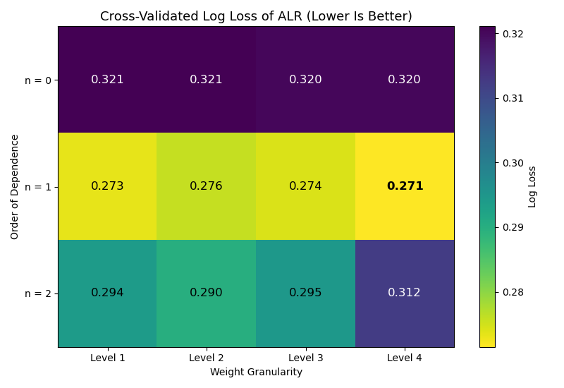

Note
Go to the end to download the full example code.
Pipelines and Model Selection with scikit-learn#
The estimators of the library follow the scikit-learn interface, so they can be combined with its preprocessing, pipelines and model selection.
The Scenario:
A table with numeric and text columns and some missing values, as it would
come out of a database. The example builds a single
sklearn.pipeline.Pipeline that:
imputes the missing values and encodes the text columns as integers (
sklearn.compose.ColumnTransformer), andfits an
skbn.ALR, told which columns are categorical.
A sklearn.model_selection.GridSearchCV then chooses the order of
the model (n_dependence) and the granularity of its weights
(weight_level) by cross-validated log loss. The heatmap shows the score
of every combination.

Best parameters: {'model__n_dependence': 1, 'model__weight_level': 4}
Cross-validated log loss: 0.271
Test log loss: 0.250
# Author: The scikit-bayes Developers
# SPDX-License-Identifier: BSD-3-Clause
import matplotlib.pyplot as plt
import numpy as np
from sklearn.compose import ColumnTransformer
from sklearn.impute import SimpleImputer
from sklearn.model_selection import GridSearchCV, train_test_split
from sklearn.pipeline import Pipeline, make_pipeline
from sklearn.preprocessing import OrdinalEncoder
from skbn import ALR
# --- 1. Build a Mixed Table with Missing Values ---
rng = np.random.RandomState(42)
n_samples = 3000
temperature = rng.normal(60, 15, n_samples)
pressure = rng.normal(1.0, 0.3, n_samples)
vibration = rng.gamma(2.0, 1.0, n_samples)
mode = rng.choice(["Idle", "Normal", "Boost"], n_samples)
supplier = rng.choice(["North", "South", "East", "West"], n_samples)
# The fault depends on the temperature in a different way in each mode
limit = np.select([mode == "Idle", mode == "Normal"], [45.0, 70.0], default=85.0)
fault = (temperature > limit) | ((vibration > 4.0) & (supplier == "East"))
y = (fault ^ (rng.rand(n_samples) < 0.05)).astype(int)
# Columns: temperature, pressure, vibration, mode, supplier
X = np.empty((n_samples, 5), dtype=object)
for j, column in enumerate([temperature, pressure, vibration, mode, supplier]):
X[:, j] = column
# Missing values in a numeric and in a text column
X[rng.rand(n_samples) < 0.08, 1] = np.nan
X[rng.rand(n_samples) < 0.08, 4] = np.nan
numeric = [0, 1, 2]
categorical = [3, 4]
X_train, X_test, y_train, y_test = train_test_split(
X, y, test_size=0.3, stratify=y, random_state=42
)
# --- 2. Pipeline: Preprocessing + ALR ---
preprocess = ColumnTransformer(
[
("num", SimpleImputer(strategy="median"), numeric),
(
"cat",
make_pipeline(SimpleImputer(strategy="most_frequent"), OrdinalEncoder()),
categorical,
),
]
)
# The transformer puts the numeric columns first, then the categorical ones
cat_idx = list(range(len(numeric), len(numeric) + len(categorical)))
pipe = Pipeline(
[
("preprocess", preprocess),
("model", ALR(categorical_features=cat_idx, l2_reg=1.0)),
]
)
# --- 3. Model Selection ---
orders = [0, 1, 2]
levels = [1, 2, 3, 4]
search = GridSearchCV(
pipe,
{"model__n_dependence": orders, "model__weight_level": levels},
scoring="neg_log_loss",
cv=5,
)
search.fit(X_train, y_train)
print("Best parameters:", search.best_params_)
print(f"Cross-validated log loss: {-search.best_score_:.3f}")
print(f"Test log loss: {-search.score(X_test, y_test):.3f}")
# Mean log loss of every combination, as an (order, level) matrix
scores = np.zeros((len(orders), len(levels)))
for params, score in zip(
search.cv_results_["params"], search.cv_results_["mean_test_score"]
):
i = orders.index(params["model__n_dependence"])
j = levels.index(params["model__weight_level"])
scores[i, j] = -score
# --- 4. Plotting ---
fig, ax = plt.subplots(figsize=(8, 5.5))
im = ax.imshow(scores, cmap="viridis_r", aspect="auto")
for i in range(len(orders)):
for j in range(len(levels)):
best = scores[i, j] == scores.min()
ax.text(
j,
i,
f"{scores[i, j]:.3f}",
ha="center",
va="center",
color="white" if scores[i, j] > scores.mean() else "black",
fontweight="bold" if best else "normal",
fontsize=12,
)
ax.set_xticks(range(len(levels)))
ax.set_xticklabels([f"Level {k}" for k in levels])
ax.set_yticks(range(len(orders)))
ax.set_yticklabels([f"n = {n}" for n in orders])
ax.set_xlabel("Weight Granularity")
ax.set_ylabel("Order of Dependence")
ax.set_title("Cross-Validated Log Loss of ALR (Lower Is Better)", fontsize=13)
fig.colorbar(im, ax=ax, label="Log Loss")
plt.tight_layout()
plt.show()
Total running time of the script: (0 minutes 1.990 seconds)